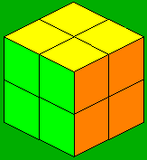
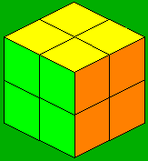

(RU2R'U')(RU2)(L'UR'U'L')
RU'R'U'F2U'RUR'DR2
Already solved! :)
R2UR2' (U2 + y') R2UR2'
LD'L F2 L'DL'
R2F2R2
R2UF2U2R2UR2'
RU'R F2 R'UR'
|
|
|
|
|
|
|
|
|
(R'U'RU')(R'U2R) |
(R'U2)(RUR'UR) |
y2 FR'F'RURU'R' |
y RUR'U'R'FRF' |
(FURU'R'F') |
FRUR'U'RUR'U'F' |
R2 U2 R U2 R2 |
|
|
|
 |
|
|
|
|
|
|
(RU2R'U')(RU2)(L'UR'U'L') |
RU'R'U'F2U'RUR'DR2 |
Already solved! :) |
R2UR2' (U2 + y') R2UR2' |
LD'L F2 L'DL' |
R2F2R2 |
R2UF2U2R2UR2' |
RU'R F2 R'UR' |